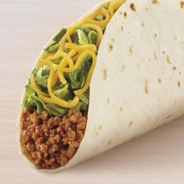
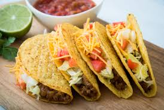
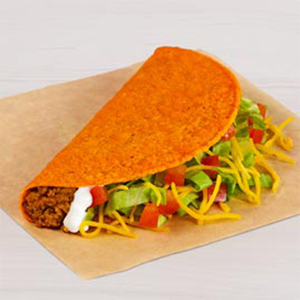

Tacos
While tortillas and there use have been around since 1500 BC, the "armored" taco shell was not until 1908. A typical hard-shell or armored taco can consist of: a tortilla, rice, pork rinds, sausage, potato, amongst other options.
The hardshell taco is not the only version of tacos. As with burritos, the taco has developed multiple variations. Below are the 3 of the most popular of these variations: the hard shell taco, the soft shell taco, and the famous Doritos Locos Taco!


